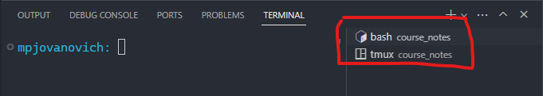

Git is a powerful tool that you'll almost certainly come across in your career.
All of the topics below are tied directly or indirectly to Git.
Git is a program that runs on a computer. It needs to be installed like any other program:
Git is a version control system (VCS):

GitHub is a website that hosts Git repositories.
GitHub is not the same as Git.
A repository is a collection of files and their history.
Should be one repository per project.
Roughly equivalent to a folder on your computer.
A user can have many repositories:

Files can be uploaded to the repository via drag and drop, or the upload button:

ALL REPOSITORIES FROM THE COURSE WILL BE DELETED AFTER THE COURSE HAS ENDED!
If you with to save your work you must fork your existing repository to your personal GitHub account.


GitHub gives you an allocated amount of minutes to use per month. While active, codespaces will use some of your minutes.
Ctrl + Shift + P
Codespaces: Close Current CodespaceAs long as your code has been pushed to GitHub, it is safe (and encouraged) to close/delete a codespace whenever you're done with a work session.
You can always start a new one.


Git commands are in the form
git [your_command_here] --[optional_flags_here].
Git commands are typed into a terminal which runs a shell.
A terminal provides a user interface into a shell.
A shell is a program that executes text commands.
bash or zsh shells.The CLI for Git can be accessed in a VS Code terminal:
Ctrl + ~ or View > Terminal.Make sure that you are in the root directory of your project:
pwd command to see the current directory.Make sure that you have the correct shell selected, bash or zsh:

The GUI for Git can be accessed in the VS Code Source Control Panel:
After committing, you can push to GitHub with the Sync button:


If requesting help via email, it will help your instructor if you leave inline comments. You may do this by opening a Codespace and clicking the message icon to the left of the line number that you'd like to comment on: